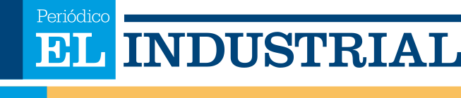
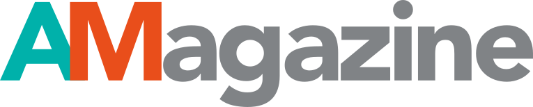

En Multimedios contamos con una plataforma propia de medios especializados en minería e industria, permitiendo amplificar contenidos con credibilidad, alcance sectorial y posicionamiento estratégico.


Medio de publicación bimensual especializado, además de la industria minera, con toda la actividad productiva del país, representada en distintas áreas como: metalúrgica, construcción, agropecuaria, automotriz, finanzas, consumo, comercio, fomento productivo, entre otras. El Industrial también está presente en faenas con información y análisis actualizados de manera clara y de fácil lectura.

Medio especializado de publicación bimensual, con enfoque en la industria minera chilena. Todo el análisis y actualidad de la pequeña, mediana y gran minería están presentes en sus páginas. Junto con ello, revista AMagazine es el único medio presente al interior de las faenas, gracias a la colaboración técnica y especializada de las y los profesionales del Sindicato de Supervisores de Minera Centinela.
Revista ProdelCobre: Medio especializado de publicación bimensual, con enfoque en la industria minera. Todo el análisis y actualidad de la pequeña, mediana y gran minería están presentes en sus páginas. ProdelCobre cuenta con la colaboración especializada de quienes hacen la minería al interior de las faenas, así como de los proveedores del ecosistema minero.
Medio especializado de publicación bimensual, con enfoque en la industria minera. Todo el análisis y actualidad de la pequeña, mediana y gran minería están presentes en sus páginas. Junto con ello, revista ProCandelaria es el único medio presente al interior de las faenas, gracias a la colaboración técnica y especializada de las y los profesionales del Sindicato de Supervisores de Minera Candelaria.
Microprograma audiovisual con foco en la revisión y resumen de los acontecimientos más relevantes de la semana en materia de minería e industria. Radar Minero publica martes y viernes, y es presentado por nuestros periodistas, quienes, a través de un formato ágil y rápido, permite a la audiencia estar al día con los hechos noticiosos que marcan la semana.
Nuestros medios permiten conectar con ejecutivos, profesionales técnicos, proveedores estratégicos y tomadores de decisión del sector minero-industrial en Chile.